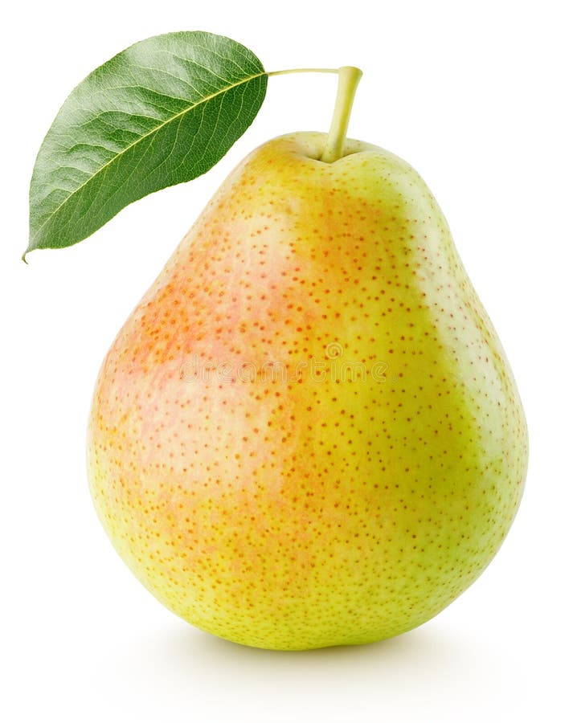

Freshness You Can Trust

Pear is a sweet, juicy, and highly nutritious fruit that is rich in dietary fiber, vitamin C, vitamin K, potassium, and antioxidants. It helps improve digestion, supports heart health, strengthens the immune system, and promotes healthy skin. Pear is low in calories and high in water content, making it an excellent fruit for hydration and weight management. It can be enjoyed fresh, in salads, desserts, or juices.